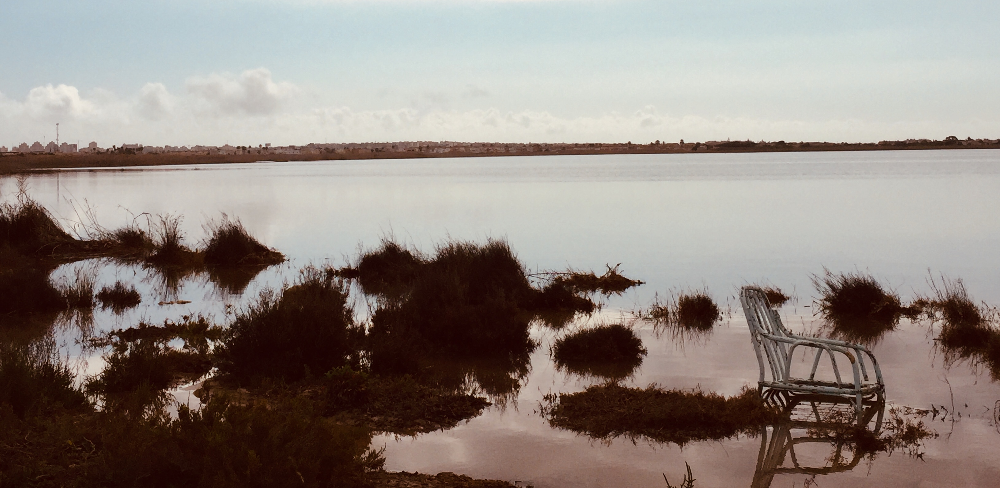

Spain —
from Barcelona's architecture to Madrid's passion and Fuengirola's perfect beaches
Spain is where we've returned again and again. Barcelona for the architecture and energy. Madrid for the surprising charm of the Bernabéu. Fuengirola for the beach and the people we keep going back to see. Each city has completely different character, but all of them deserve proper time and attention. This is our guide to the Spain we know.
Where we've been in Spain
Barcelona, Madrid, Fuengirola, the Costa del Sol, Alicante and the Balearic Islands — different sides of Spain from city breaks to Mediterranean coasts and islands.
Madrid — Spain's largest city and cultural heart in the centre of the country.
Approximately 47 million people. One of the most visited countries in Europe.
Spanish (Castilian) is official throughout. Catalan widely spoken in Barcelona and the northeast.
Euro (EUR). ATMs widely available. Credit cards accepted everywhere.
Central European Time (CET, UTC+1) / Summer Time (CEST, UTC+2).
220V, 50Hz. European two-pin plugs standard throughout.
Mediterranean coast: warm summers, mild winters. Interior cooler. Best: May-June and September-October.
Range from budget hostels to luxury hotels. Good value outside major cities.
Tapas culture. Fresh seafood on the coast. Wine regions. Dinner typically 9pm onwards.
Excellent train network, buses, and local metro systems in major cities. Car rental for exploring.
Good value. Budget: €40-60/day. Mid-range: €60-120/day. Luxury: €120+/day outside major cities.
Spain averages 300 days of sunshine per year. Mediterranean coast particularly sunny.
Each of these destinations has its own character and its own story. Choose where to start.

The Sagrada Família, Park Güell, La Rambla and the Gothic Quarter. Barcelona is pure sensory overload in the best possible way.
Read our Barcelona story →
The Royal Palace, the Prado, and the surprisingly fascinating Bernabéu stadium tour. Madrid gets better the more time you spend there.
Read our Madrid story →
We keep coming back. Beautiful beach, perfect weather, and the kind of place where you make friends and remember why you loved it before.
Read our Fuengirola story →
Spain's famous sunny coast. Beaches, seafood, Spanish village life and that perfect Mediterranean light that makes everything beautiful.
Read our Costa del Sol story →
Alicante adds the Costa Blanca to our Spain travels — Mediterranean sunshine, coast and another very different side of the country.
Explore Alicante virtually →Island escapes in the Mediterranean — explore our travels across Spain's Balearic Islands.
Read our Balearic Islands story →Navigating gluten-free eating in Spain
Spain has a growing awareness of celiac disease (enfermedad celíaca) and gluten-free options are increasingly available, particularly in larger cities and tourist areas. Most restaurants are responsive if you mention "sin gluten" or "celíaco". Supermarkets in tourist areas have gluten-free sections.
Experiences across Spain
From Barcelona's architecture tours and Sagrada Família skip-the-line to Madrid's museums and Costa del Sol beach experiences.
Disclosure: If you book through this link we may earn a small commission at no extra cost to you.
Guided Spain tours through TourRadar
Multi-city Spain itineraries that combine Barcelona, Madrid and the coast. Perfect if you want the logistics handled and the insider knowledge included.
Disclosure: This is an affiliate link. If you book through it we may earn a small commission at no extra cost to you.
Common questions
Spain FAQ
Plan your Spain trip
Spain wants you to slow down. Skip the rushing between cities and spend real time in each one. Two weeks, if you can. This is not a place for ticking boxes.